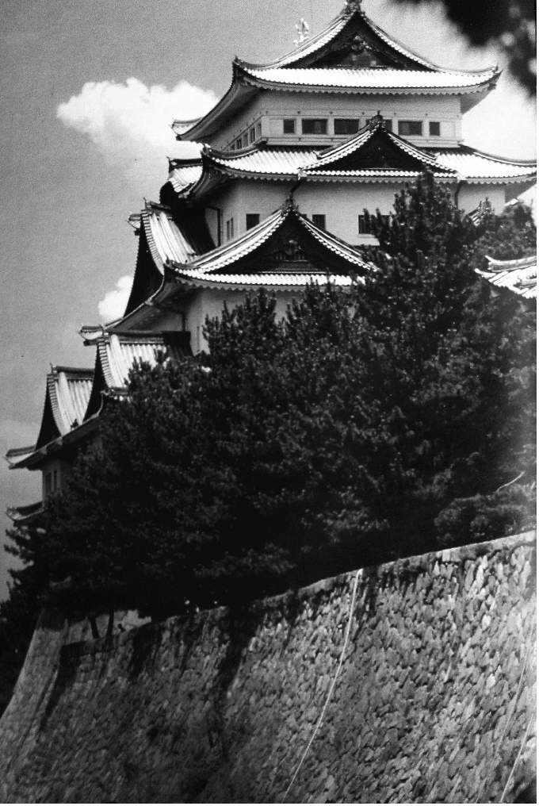

645年大化改新所引进的中国的帝国组织体制明显地生效了很长一段时期。不过，到12世纪，它已为日本种种封建制所破坏和取代。一个原因是，国司们沉溺于京都的享乐，往往将自己的权力、职责委托给地方部属。另一原因是，强大的地方家族和佛教团体总是渴求着土地，并常以暴力夺取土地。这些趋向使纳税土地的数量减少，从而意味着使自耕农的税收负担增加。于是，自耕农们或者逃亡到北部边境地区，用武力驱走那里的阿伊努人，或者将自身连同土地寄托给庄园主。这使他们可以免除赋税，得到保护，但付出的代价是自己转沦为农奴。这一过程的最后结果是，到12世纪末，纳税土地仅占全部耕地的10%甚或以下，地方政权已由新兴的农村贵族接管。
同时，由于帝国军队的瓦解，农村贵族还成为居支配地位的军事力量。大化改新规定，凡20岁至60岁之间的男性国民都必须服兵役。但是，应征士兵得自备武器和给养，而且，其固定赋税不予减免。这一规定被证明是难以实行的，于739年被废弃。政府军职成为通常由颓靡的宫廷贵族担任的挂名职务。结果，对阿伊努人的战争由农村贵族指挥。他们成为骑马武士，并逐渐增强自己的军事力量，直至完全超越帝国军队。这时，一种封建关系在农村贵族和他们的随从即“侍”（字面含义是“为人服务者”）之间发展起来。这种关系以一种理想化的道德规范即“武士道”为基础。侍享有一些特殊的法定权利和礼仪上的权利，作为回报，他们须绝对服从其主子的调遣。
到12世纪，日本为一些相互竞争的封建领主集团所控制。最后，一个封建领主脱颖而出，从天皇那里取得了“征夷大将军”称号，并有权指定自己的继承人。此后，日本为一系列幕府将军所统治。他们控制着军事力量，而天皇继续在京都过着隐居生活。这些家族中最重要的是1603年由德川家康建立的德川幕府，它对全国的统治一直持续到1868年王政复古和明治维新开始。德川家康及其直系继承者制定了一系列旨在使其家族统治永存的政策。德川政权的物质基础在于幕府直辖领地。它占全部可耕地的四分之一至三分之一，由分布在全国诸战略要地的大庄园组成，提供了防范有可能心怀敌意的大名的控制点。幕府最高职务均由德川家族成员或其家臣担任。天皇从幕府得到的财政收入能维持其本人及一小群宫廷贵族的日常用度，但天皇没有政治职责或政治权力。

图131 江户时代的武将德川家康下令建造的一座城池——名古屋城。
使严格、世袭的等级结构永存，是德川幕府为防止任何可能破坏其统治的变化而做出的部分努力。居这一等级结构之首的，是占人口百分之六的贵族。绝大多数日本人是农民，为第二等级；它包括无地的佃农以及拥有从1.25英亩至85英亩不等土地的地主。不管其地位如何，这些农民生产了稻米，归根到底，供养了贵族。实际上，贵族也是用稻米来衡量其收入的。
德川幕府确认的最后两个等级，依次为手工业者和商人。德川幕府时，长期的和平与安定使城市居民的人口和财富大大增加。德川幕府通过提倡儒家朱熹学派，为其政权奠立思想基础。因为儒家强调孝顺长者、忠于上级的美德，认为任何社会集团里都该如此。在理想的日本家庭中，父权是绝对的、无可争辩的，这一点甚至比在中国得到了更为明确的表达。对德川幕府来说，尤具吸引力的是，儒家还强调了政治上的合法正统地位的伦理基础和一切守旧的品德。这种意识形态带来的一个结果是，日本的家庭制度，尤其是武士制度，由于服从于幕府将军或大名的利益而与社会紧密地融为一体。家庭和国家之间的和谐远远超过中国，从而为民族团结和民族活动提供了根本基础，为日本19世纪的明治维新提供了便利。